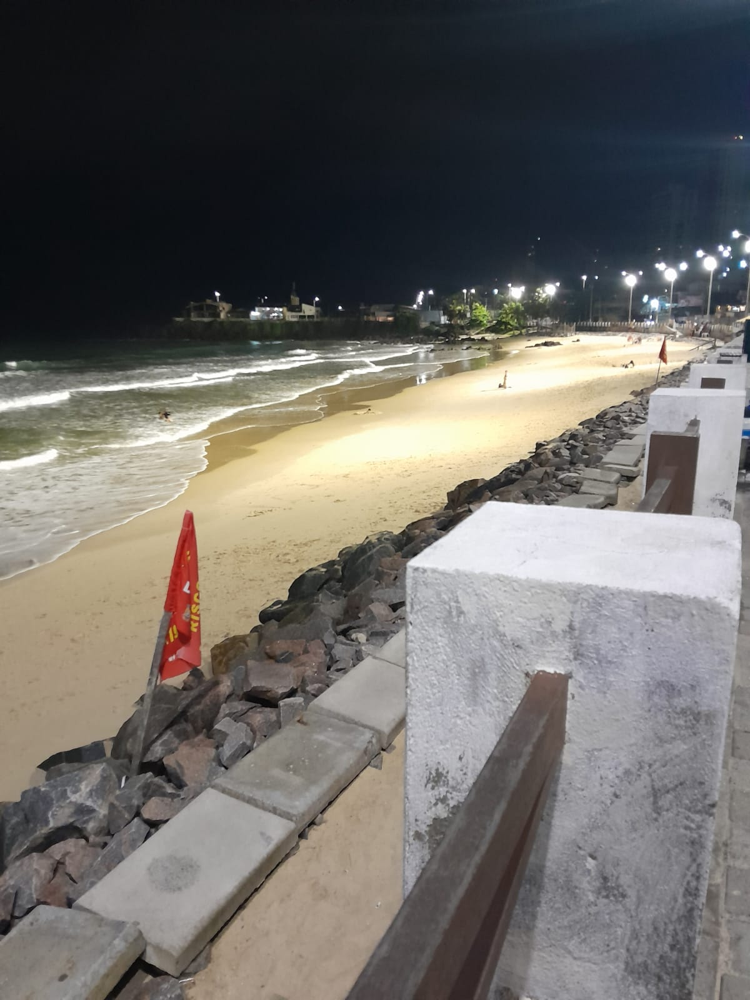
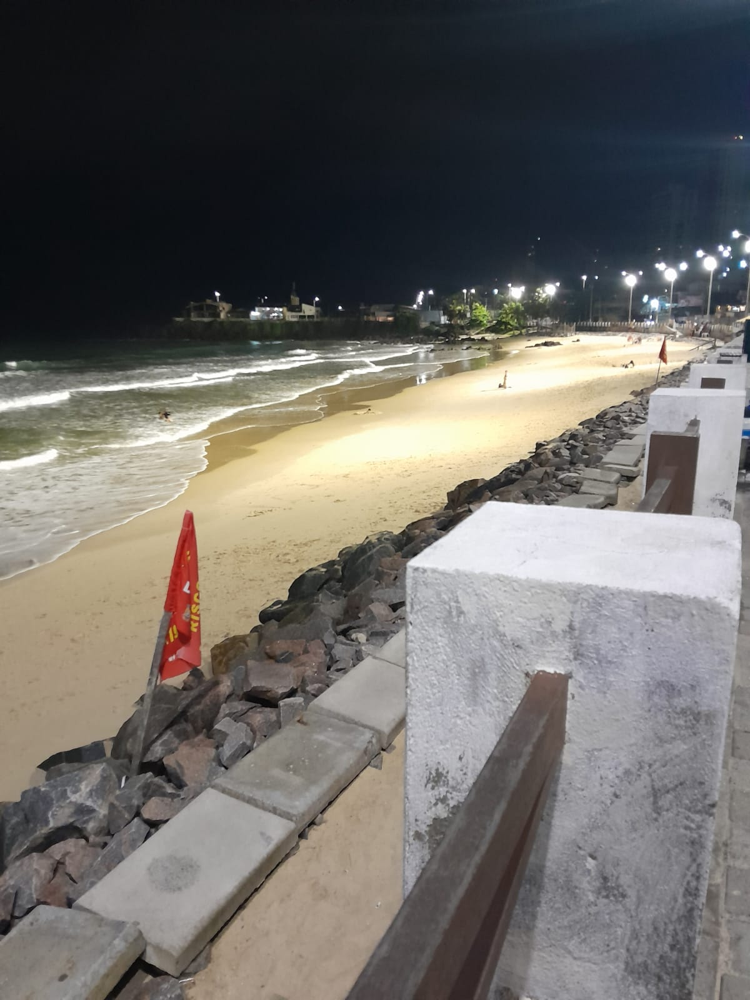

Ponta Negra
Embora tenha sido caro, a Praia de Ponta Negra é um lugar lindo e vale a pena visitar pelo visual do Morro do Careca.

Praia dos Artistas
A Praia dos Artistas é ótima para passar o tempo com amigos e relaxar.
Embora tenha sido caro, a Praia de Ponta Negra é um lugar lindo e vale a pena visitar pelo visual do Morro do Careca.
A Praia dos Artistas é ótima para passar o tempo com amigos e relaxar.
